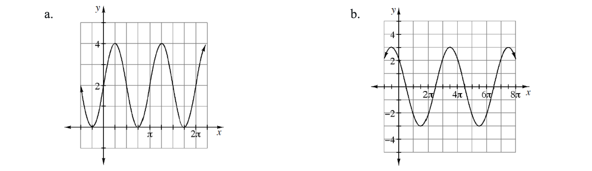

Describe the graph of:
\(x^2+y^2=16\)
\(r=4\)
Make a table and graph \(r=6\sin(\theta)\).
Solve the following system of equations:
\(y-24=(3+\sqrt{2x-1})^2\)
\(y=10(3+\sqrt{2x-1})\)
Solve each of the following equations. Use exact values.
\(\ln(x+4)=3\)
\(e^{3x}-6=22\)
Write an equation for a sixth-degree polynomial function that has roots of \(x=-2\pm\sqrt{3}\), a double root at \(x=0\), a complex root of \(x=5+3i\), and passes through the point \((-1,-12)\).
Approximate the area under the curve \(f(x)=-\frac{1}{2}x^2+8\sqrt{x}-1\) over the interval \(1\le x\le 5\) using 12 right endpoint rectangles.
Write two equations that will generate each of the graphs below, one in terms of sine and one in terms of cosine. Use graph.

Complete the following matrix computations.
\(\begin{bmatrix}1&2\end{bmatrix}\begin{bmatrix}2&-1\\4&0\end{bmatrix}\)
\(\begin{bmatrix}2&4\end{bmatrix}\begin{bmatrix}2&-1\\4&0\end{bmatrix}\)
Use the results of the pattern of parts (a) and (b) to state the product \(\begin{bmatrix}10&20\end{bmatrix}\begin{bmatrix}2&-1\\4&0\end{bmatrix}\) without computing.
Verify your result for part (c) by multiplication.
Investigate the graph of \(r^2=a^2\cos(2\theta)\).
Plot each of the following points given in polar coordinates. Then state the other three equivalent polar forms of the coordinates.
\(\left(-1,\frac{\pi}{2}\right)\)
\(\left(-5,-\frac{2\pi}{3}\right)\)
\(\left(2,-\frac{5\pi}{4}\right)\)
The pesticide DDT was widely used in the United States until its ban in 1972. DDT is toxic to a wide range of animals and aquatic life, and is suspected to cause cancer in humans. Scientists and environmentalists worry about such substances because these hazardous materials continue to be dangerous for many years after their disposal. The half-life of DDT is estimated to be 15 years.
Write an equation to model the amount of DDT in an object after t years if 500 mg of the substance is detected.
A concentration of just 2.73 mg per pound in a person can cause headaches, nausea, vomiting, confusion, and tremors. How much DDT is this for a person who weighs 130 pounds? Use your equation to determine how long it would take for the 500 mg to decay to a safe level for this person.
Even smaller amounts of DDT can affect small microorganisms. For example, water that contains just 0.0001 mg of DDT per liter can slow down growth and photosynthesis in green algae. Determine how long it would take for 500 mg of DDT present in one liter to decay to this level.
Divide \(x^3+3x^2-2x+1\) by \(x^2+x-2\). Remember to express any remainder as a fraction.
Given \(\cot(\beta)=\frac{\sqrt{7}}{3}\) and \(\beta\) is in Quadrant III \(\left(\pi<\beta<\frac{3\pi}{2}\right)\), calculate each of the following values.
\(\cos(\beta)\)
\(\csc(\beta)\)
Rewrite each of the following equations in graphing form, identify the conic, and sketch the graph. Also include all of the key information, such as the locations of the foci and/or the equations of any asymptotes.
\(4x^2+9y^2+24x-36y=-36\)
\(3x^2-12x-y=-17\)
In a baseball game, Alex hits a ball with an initial velocity of 110 ft/s at an angle of 53° with the horizontal. The ball was struck at an initial height of 4 feet. Alex will hit a homerun if the ball travels 330 feet and has a height of at least 10 feet. Does Alex hit a homerun? How far will the ball have traveled horizontally when it hits the ground?
Rationalize the denominators of the following fractions.
\(\frac{7}{3-\sqrt{2}}\)
\(\frac{1}{\sqrt{x^3}}\)